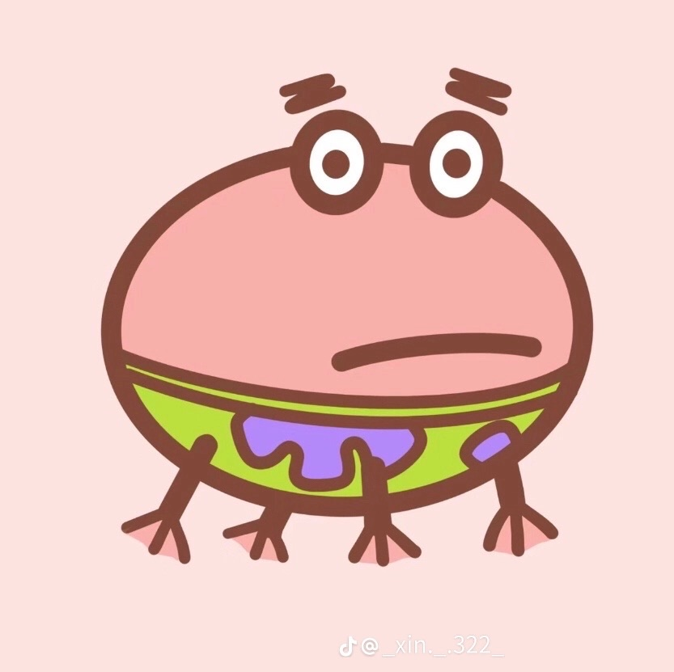

我是資傳系一年級新生喜歡睡覺

我是一個很懶的人,但感覺又沒很懶,因為我平常懶得做很多事,但一旦想做就會想盡全力,把東西做成我想像的樣子,而且完成某些任務時會有前置條件,例如打掃房間 我在家裡沒人的時候會把房間打掃得很乾淨,但一旦有人在家裡,我就會懶得打掃房間,因為我不想被人看到我在打掃房間,所以我會等到沒人時才打掃房間 ,很奇怪吧,但我真的覺得這種不被人發現的情況下完成私事才不會有那種彆扭的感覺。